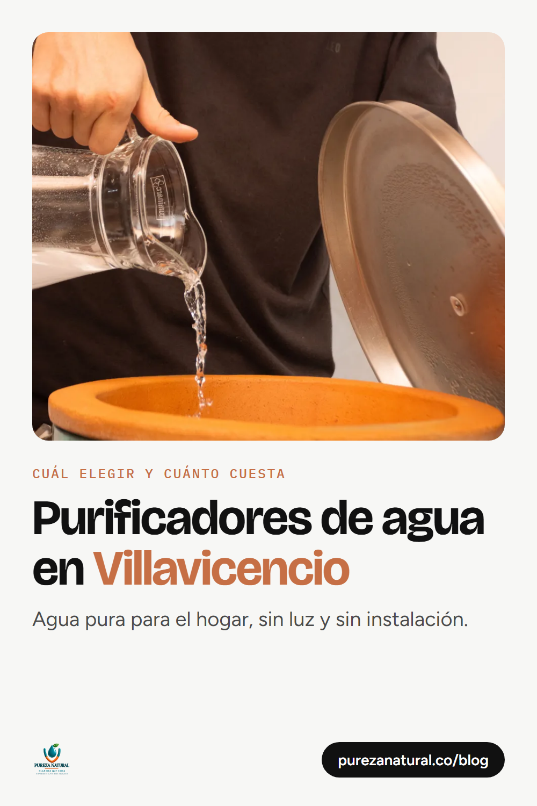

Comparativa · 8 nov 2026
Purificador vs botellón: cuál conviene en Villavicencio
Costo mensual, comodidad y calidad del agua, con precios reales y una calculadora de ahorro.
Leer la comparativa
Guía · 8 nov 2026
Purificadores de agua en Villavicencio: cuál elegir
Agua pura para el hogar, cuánto cuesta cada modelo y cuánto ahorras frente a los botellones.
Leer la guía